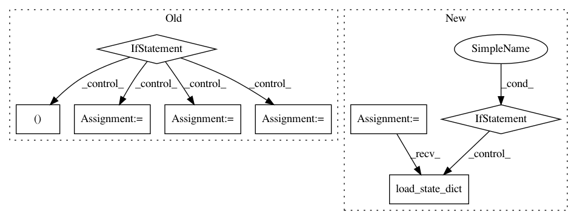

74e6e29479fe7a05ade55441ef939d593651aef2,vocoder/train.py,,main,#Any#,430
Before Change
// if num_gpus > 1:
// model = apply_gradient_allreduce(model)
if c.noam_schedule:
scheduler_gen = NoamLR(optimizer_gen,
warmup_steps=c.warmup_steps_gen,
last_epoch=args.restore_step - 1)
scheduler_disc = NoamLR(optimizer_disc,
warmup_steps=c.warmup_steps_gen,
last_epoch=args.restore_step - 1)
else:
scheduler_gen, scheduler_disc = None, None
num_params = count_parameters(model_gen)
print(" > Generator has {} parameters".format(num_params), flush=True)
num_params = count_parameters(model_disc)
print(" > Discriminator has {} parameters".format(num_params), flush=True)
After Change
// schedulers
scheduler_gen = getattr(torch.optim.lr_scheduler, c.lr_scheduler_gen)
scheduler_disc = getattr(torch.optim.lr_scheduler, c.lr_scheduler_disc)
scheduler_gen = scheduler_gen(optimizer_gen, **c.lr_scheduler_gen_params)
scheduler_disc = scheduler_disc(optimizer_disc, **c.lr_scheduler_disc_params)
// setup criterion
criterion_gen = GeneratorLoss(c)
criterion_disc = DiscriminatorLoss(c)
if args.restore_path:
checkpoint = torch.load(args.restore_path, map_location="cpu")
try:
print(" > Restoring Generator Model...")
model_gen.load_state_dict(checkpoint["model"])
print(" > Restoring Generator Optimizer...")
optimizer_gen.load_state_dict(checkpoint["optimizer"])
print(" > Restoring Discriminator Model...")
model_disc.load_state_dict(checkpoint["model_disc"])
print(" > Restoring Discriminator Optimizer...")
optimizer_disc.load_state_dict(checkpoint["optimizer_disc"])
if "scheduler" in checkpoint:
print(" > Restoring Generator LR Scheduler...")
scheduler_gen.load_state_dict(checkpoint["scheduler"])
// NOTE: Not sure if necessary
scheduler_gen.optimizer = optimizer_gen
if "scheduler_disc" in checkpoint:
print(" > Restoring Discriminator LR Scheduler...")
scheduler_disc.load_state_dict(checkpoint["scheduler_disc"])
scheduler_disc.optimizer = optimizer_disc
In pattern: SUPERPATTERN
Frequency: 3
Non-data size: 8
Instances
Project Name: mozilla/TTS
Commit Name: 74e6e29479fe7a05ade55441ef939d593651aef2
Time: 2020-06-15
Author: erogol@hotmail.com
File Name: vocoder/train.py
Class Name:
Method Name: main
Project Name: mozilla/TTS
Commit Name: f0144bfcba8411fd68a934158307ec49b00a0ea2
Time: 2020-06-09
Author: erogol@hotmail.com
File Name: vocoder/train.py
Class Name:
Method Name: main
Project Name: lcswillems/torch-rl
Commit Name: 3f196bcdd1e0310208e8978cf4f1fb590614568b
Time: 2018-04-15
Author: lcswillems@gmail.com
File Name: utils.py
Class Name:
Method Name: load_model